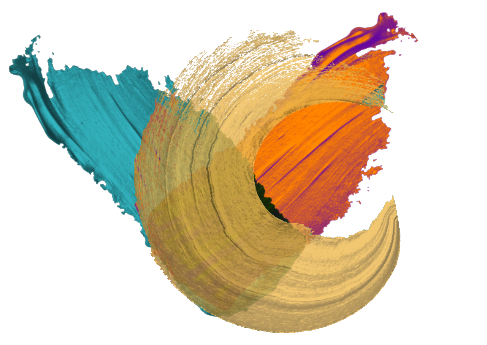
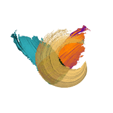

VentCourse · Paediatric ventilationPhysiology first, then the machine. Each lesson ends at the bedside of a simulated patient.
Every breath the ventilator gives has to overcome two things: the stiffness of the lungs and chest wall, and the friction of gas moving through the airways.
The equation of motion puts both on one line. Airway pressure is the sum of an elastic part, set by volume and compliance, and a resistive part, set by flow and resistance.
Hold the breath at end-inspiration and flow stops. The resistive term drops out, leaving the plateau pressure. The gap between peak and plateau is the airway; the gap between plateau and PEEP is the lung.
Peak pressure climbs from 28 to 42 cmH₂O. Plateau stays at 22. What changed?
{{ quizFeedback }}
{{ bl.lede }}
{{ p }}
{{ bl.vidNote }}
{{ d.note }}
{{ bl.peds }}
{{ bl.q }}
{{ bQuizFeedback }}
{{ w.story }}
{{ sc.story }}
A ventilator is a machine that takes in energy and turns it into a controlled pattern of pressure and flow. Four questions describe any model on your unit.
{{ mExplain }}
Most ICU ventilators also have an NIV mode. NIV describes the interface and strategy; the machine can be either type.
A 1 kg preterm on volume control, set VT 6 mL. Circuit compliance is 3× the baby's, with no compensation. What reaches the lungs?
{{ mQuizFeedback }}
Specifically, we are interested in the pressure necessary to cause a flow of gas to enter the airway and increase the volume of the lungs.
{{ caseStory }}
{{ caseSetting }}That is all you are told. Take over, then ask for what you need: examine, image, send a gas, read the handover. Everything you ask for and do is timed and scored.
{{ caseEvent }}
{{ actFb }}
{{ modeTrig }}{{ modeRest }}
Read the chart, take over the patient, then ask for what you need. Finish the case when the ventilator is right.
Five ventilated children. Read the assessment and the monitor, decide what is going on, then act.
{{ y.blurb }}
{{ z.blurb }}
